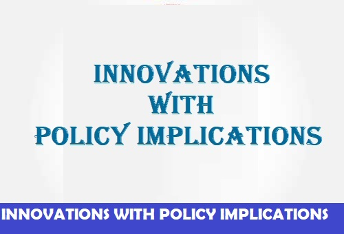

Institute of appiled and Development Studies


|  | |
|
 |
|---|
Founder Late Prof. A.R. Roy Founder Director/ Member Secretary October 1985 to May 01, 1990 |
Professor Anadi Ranjan Roy (1920-1990) took M.Sc. Degree in Pure Mathematics in 1942 and
in Statistics in 1944, both from Calcutta University. After completing his postgraduate,
he joined the Indian Council of Agricultural Research and rose to the position of
Professor of Statistics there. During his stay at Calcutta, he had the privilege of
being taught by Professor P.C. Mahalanobis, Professor R.C. Bose, and Professor P.K. Bose
among others. Subsequently, he proceeded to USA for doctoral degree from Stanford
University on a Fulbright Grant where he worked with several stalwarts including
Professor Charles Stein, Herman Chernoff, and Meyer Girshick. His teachers and research
associates/supervisors were highly impressed by his research work and potentials. In
1959, he joined the Department of Statistics, Lucknow University as Professor and Head
and continued to hold the position till his retirement in 1980. |
LEGAL STATUS Registered: Under Societies Registration Act. 1860, Registration no. 3458/85-86, valid till 25.10.2025 PAN Card Details: AAATI0945C 12A: IASDS is registered under 12A of Income Tax - Registration No.AAATI0945CE20218 dated 23.09.2021 for Five Assessment year 2022-23 to 2026-27. 80 G Donation Exempted: IASDS is registered under 80G of Income Tax - Registration No.AAATI0945CF20190 dated 23.09.2021 for Five Assessment year 2022-23 to 2026-27. NITI AAYOG registration ID: UP/2012/0052417 DSIR: Recognized by DSIR vide letter no. 13/293/2016-TU-V dated 07/10/2016 |
|---|
OUR PUBLICATION
|
MEMORANDUM OF ASSOCIATION |
|---|
ongoing project
|
End line Assessment of "To Improve the reproductive health of adolescent girls and women in age grou on: 2023 Source of fund: Vatsalya, Lucknow |
|---|
OUR WORK IN VARIOUS STATES OF INDIA
|
State
New Delhi |
|---|
TestimonialsWe had invited Professor A.K. Nigam to the Academy to help us in rendering the statistical advice for finalizing our All India Report on Land Refprms. He is extremely knowledgeable and his presence in the workshop would be very helpful for the future of this project. C M PANDEY PRESIDENT (ELECT) INTERNATIONAL EPIDEMIOLOGICAL ASSOCIATION, NORTH CAROLINA |
WHY CHOOSE US?
|
|---|

|
|---|
|
OUR WORK |
Location1st Floor, 1/220 Virat Khand, Gomtinagar, |
CALL US ON:
|
|---|
|
© 1985 - 2019 Institute of Applied Statistics & Development Studies[ I A S D S ] - All Rights Reserved.SFSN |
Contact us Privacy Policy |
|---|